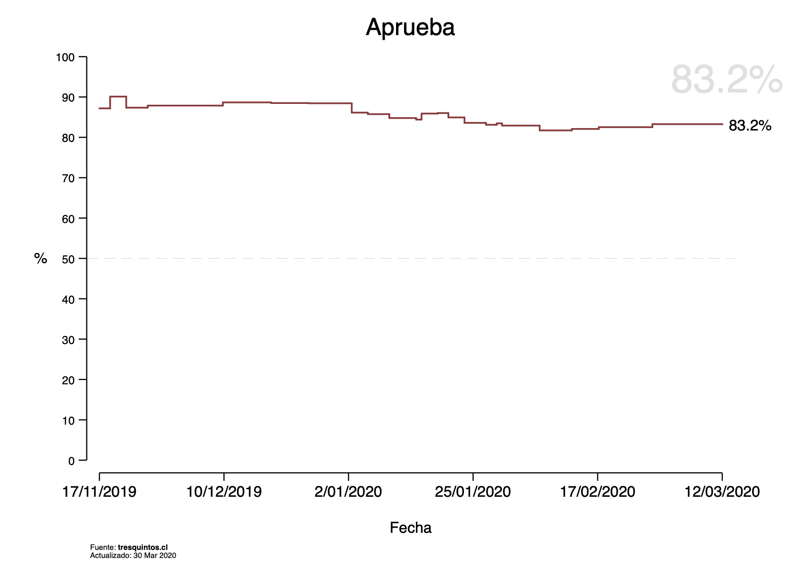
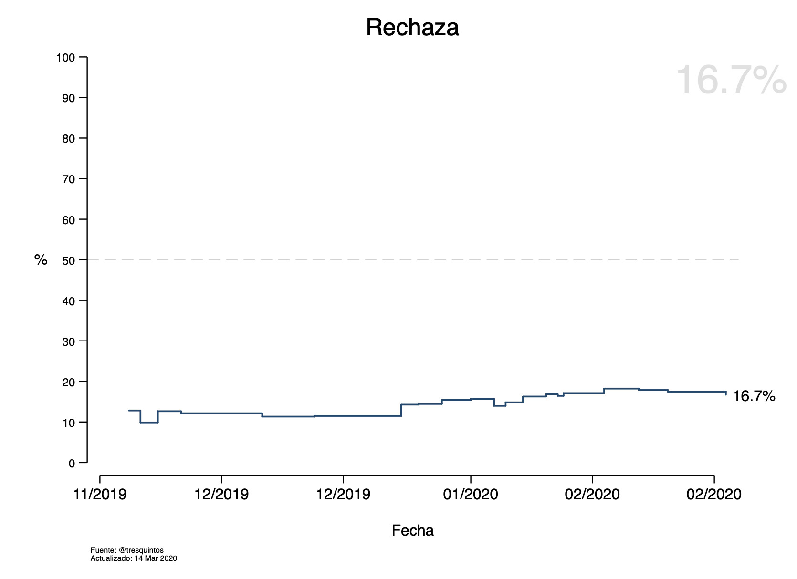

{:height="45%" width="45%"}
{:height="45%" width="45%"}  {:height="45%" width="45%"}
{:height="45%" width="45%"}permalink: # / layout: single title: ¡Bienvenidos a Tresquintos! excerpt: "Análisis político y pronósticos electorales"
En este sitio web podrás encontrar análisis político y pronósticos electorales para las próximas elecciones que se llevarán a cabo en Chile. Tresquintos busca entregar contexto a votantes que cada vez más se enfrentan a información contradictoria. El sitio está integrado directamente a GitHub para facilitar la interactividad. Los gráficos se producen de forma automática cada vez que se actualizan las bases de datos. Si es tu primera vez en Tresquintos, te recomendamos partir por aquí. Si ya sabes cómo funciona, puedes consultar las elecciones con un pronóstico o simulación aquí.
Si quieres leer la bienvenida formal al nuevo sitio de Tresquintos, pincha aquí. Si estás buscando algo específico, puedes ver tendencias para el plebiscito nacional de 2020 aquí, y una simulación para la probable elección de constituyentes de 2020 aquí. Si estás buscando la elección presidencial de Chile de 2021, la puedes encontrar aquí, y si estás buscando información sobre la elección legislativa de Chile de 2021, puedes pinchar aquí. Para revisar el blog, pincha aquí. Para leer la documentación de los pronósticos, pincha aquí, y para leer la documentación de las simulaciones, pincha aquí.
Por ahora, estamos 100% enfocados en el plebiscito nacional de Chile de 2020, que se llevará a cabo el 26 de abril. El plebiscito buscará determinar dos cosas: (1) si se reemplaza la actual Constitución, y (2) el mecanismo para hacerlo. Los dos gráficos de abajo muestran la tendencia para la primera pregunta: ¿Quiere usted una nueva Constitución?
{:height="45%" width="45%"} {:height="45%" width="45%"}
Para ver más gráficos y análisis sobre el plebiscito, pincha aquí. Para conocer la metodología tras los gráficos, pincha aquí. Los dos gráficos que siguen muestran la tendencia para la segunda de las dos preguntas: ¿Qué tipo de órgano debiera redactar la nueva Constitución?
{:height="45%" width="45%"} {:height="45%" width="45%"}
Considerando la alta probabilidad de un triunfo de la opción "Aprueba", también tenemos algunos números simulando la potencial composición de los orgános constituyentes. El gráfico de abajo muestra una potencial distribución de escaños en base a tendencias electorales de 1989-2017, la elección de diputados de 2017, y la fragmentación del sistema de partidos post 18 de octubre. Para ver más gráficos y análisis sobre la elección de constituyentes, pincha aquí. Para conocer la metodología tras los gráficos, pincha aquí.
 {:height="45%" width="45%"}
{:height="45%" width="45%"}  {:height="45%" width="45%"}
{:height="45%" width="45%"}
Para ver las preguntas frecuentes, pincha aquí. Si quieres contribuir a Tresquintos, revisa esto. Y si aun tienes preguntas, puedes contactar a Kenneth directamente por Twitter.